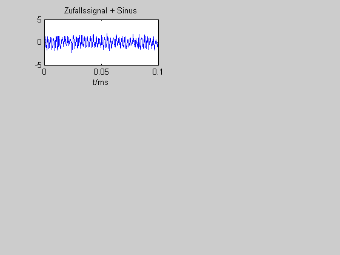
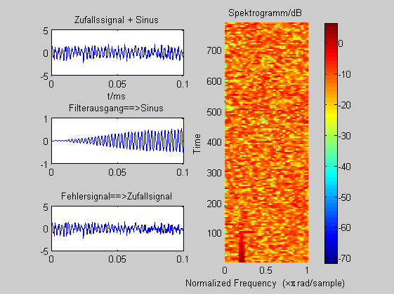
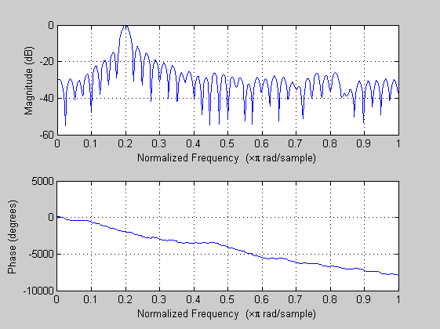

Contents
Pfeifunterdrückung
durch einen adaptiver Prädiktor
(c) HSM, B. Wir 2.8.2012
clear all; close all;
Sinuston
F_A = 4000
T_A = 1/F_A
WINDOW = 64;
F = 400;
t = 0:T_A: T_A*4999;
x = sin (2*pi*F*t);
r = randn(size(t));
x_r = x + 0.5*r;
figure(1)
subplot(3,2,1); plot(t(1:400),x_r(1:400));
title('Zufallssignal + Sinus');xlabel('t/ms');
F_A =
4000
T_A =
2.5000e-004

Pfeifunterdrückung
N = 80;
DELAY = 5;
STEP = 0.01/N;
w = zeros(1,N);
[y,e,w] = lmsPredictor(w,DELAY, STEP,x_r);
subplot(3,2,3); plot(t(1:400),y(1:400)); title('Filterausgang==>Sinus');
subplot(3,2,5); plot(t(1:400),e(1:400)); title('Fehlersignal==>Zufallsignal');
subplot(3,2,[2, 4,6]);
spectrogram(e,WINDOW);colorbar;title('Spektrogramm/dB')
soundsc(x_r);
soundsc(y);
soundsc(e);
figure(2);
zplane(w,1); title('Bandpass')
freqz(w,1,512)
 